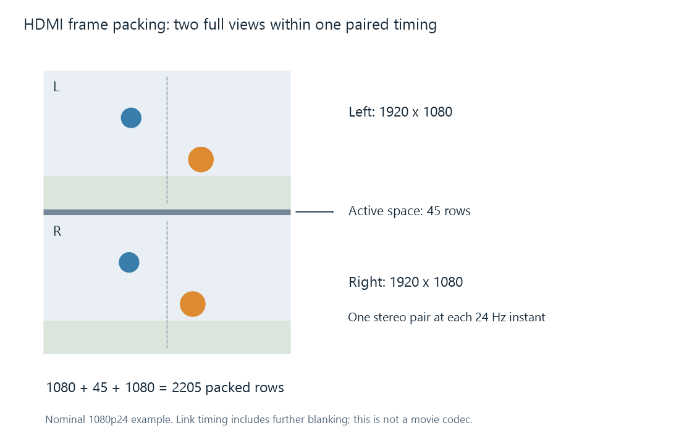

Frame-Packed 3D Video
A 3D movie can be stored using MVC and sent to a television using HDMI frame packing. The first describes compressed view data; the second describes how reconstructed views travel over the display connection. The two labels identify different stages of one playback route.
The phrase frame packing also has a broad use for placing two views into one image, including side-by-side and top-and-bottom arrangements. This article develops the specific HDMI frame-packing structure commonly meant by a frame-packed 3D output.
Two full views and a timing interval
In the nominal 1080p24 example, each eye receives a 1920 × 1080 view. The defined packed active region includes one full view, an intervening 45-row active-space interval, and the other full view:
1080 + 45 + 1080 = 2205 rows.

The pictured order is left then right. The diagram concerns the display-link structure, with the interval drawn to scale relative to the two view rectangles.
The link's full timing also includes blanking outside the pictured active region. For the nominal example, the total is 2750 sample periods per line and 2250 rows, at a pixel clock of 148.5 MHz. The paired-picture rate is consequently:
148,500,000 / (2750 × 2250) = 24 pairs per second.
Each eye gets 24 distinct scene pictures per second. The two full views increase the transported information for each scene instant; they do not make the movie's motion 48 frames per second per eye. The fractional-rate counterpart uses its corresponding timing.
Linux's display-mode helper makes the timing relationship visible: for the frame-packing flag, it doubles the pixel clock and total vertical timing, while adding the original vertical total to the active height. A 1080-line picture with an original 1125-row total therefore becomes 1080 + 1125 = 2205 active-region rows and a 2250-row total.
The player has to construct the output
The source decoder first makes the two required views available. They can originate from MVC, MV-HEVC, or a packed source that has been unpacked. The output stage then places the reconstructed views into the required timing and supplies the 3D signaling expected by the link and display.
An Emby investigation should therefore identify both the source representation and the app's output path. Showing a compatible base view from an MVC source establishes one reconstruction result. Transporting the complete stereo pair requires the additional view and an output method capable of presenting it.
The connection chain matters too. The source, intervening receiver or other device, and display need to handle the selected 3D timing and signaling. The file's extension cannot establish those link capabilities.
A tall coded picture is a separate representation
A full top-and-bottom file with two 1920 × 1080 regions can use a 1920 × 2160 coded raster. Its views meet at row 1080 with no intervening 45-row space in that simple arrangement.
The pictured HDMI active region has height 2205. Its second view begins after the first view and the 45-row interval, at row 1125. Those different boundaries matter to any operation extracting the two views.
Encoding a tall combined picture as ordinary video causes its decoder to reconstruct that picture grid. A display-link stage still needs to supply the applicable timing and stereo signaling. Top-and-bottom unpacking and the construction of an HDMI output describe the respective operations.
Reading the names in a playback trace
| Description | Stage it identifies |
|---|---|
| MVC | Multiview H.264 coding of source views |
| MV-HEVC | Multiview HEVC coding of source views |
| Side-by-side or top-and-bottom | Spatial placement of views in a picture |
| HDMI frame packing | Paired display-link timing and 3D signaling |
See Also
- How Stereoscopic Video Works
- Top-and-Bottom 3D Video
- Multiview Video Coding (MVC)
- MV-HEVC and Spatial Video